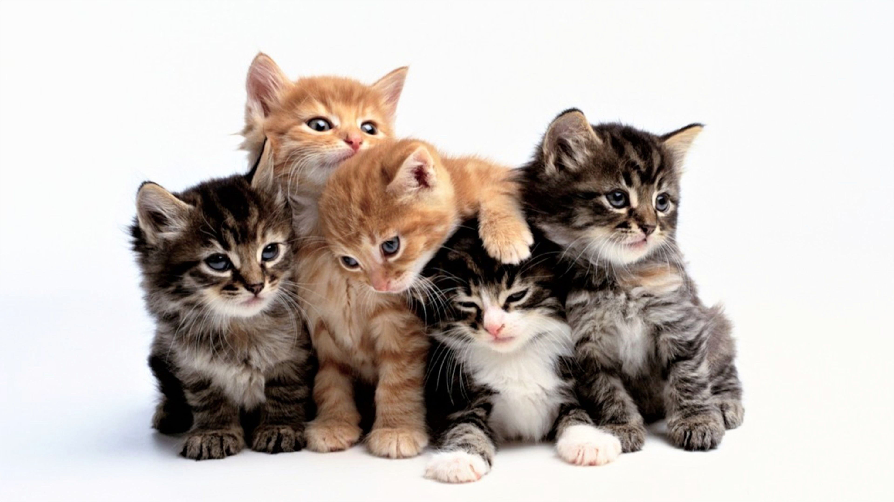

cats
The cat (Felis catus) is a domestic species of small carnivorous mammal. It is the only domesticated species in the family Felidae and is often r eferred to as the domestic cat to distinguish it from the wild members of the family.
Usefullness of Cat
Cat breeds
Birman Cat Breed
Japanese Bobtail Cat Breed
Maine Coon Cat Breed
Persian Cat Breed
The cat is similar in anatomy to the other felid species: it has a strong flexible body, quick reflexes, sharp teeth and retractable claws adapted to killing small prey. Its night vision and sense of smell are well developed. Cat communication includes vocalizations like meowing, purring, trilling, hissing, growling and grunting as well as cat-specific body language. A predator that is most active at dawn and dusk (crepuscular), the cat is a solitary hunter but a social species. It can hear sounds too faint or too high in frequency for human ears, such as those made by mice and other small mammals.It secretes and perceives pheromones Female domestic cats can have kittens from spring to late autumn, with litter sizes often ranging from two to five kittens.Domestic cats are bred and shown at events as registered pedigreed cats, a hobby known as cat fancy. Population control of cats may be effected by spaying and neutering, but their proliferation and the abandonment of pets has resulted in large numbers of feral cats worldwide, contributing to the extinction of entire bird, mammal, and reptile species. Cats were first domesticated in the Near East around 7500 BC.It was long thought that cat domestication began in ancient Egypt, where cats were venerated from around 3100 BC.As of 2021, there are an estimated 220 million owned and 480 million stray cats in the world.As of 2017, the domestic cat was the second-most popular pet in the United States, with 95 million cats owned.In the United Kingdom, 26% of adults have a cat with an estimated population of 10.9 million pet cats as of 2020.